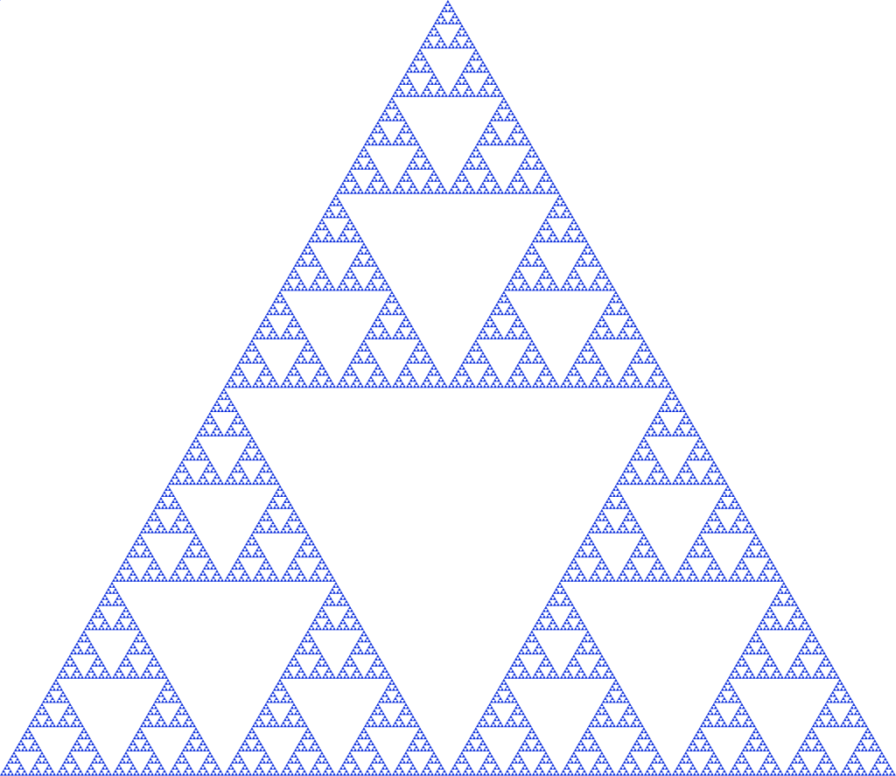
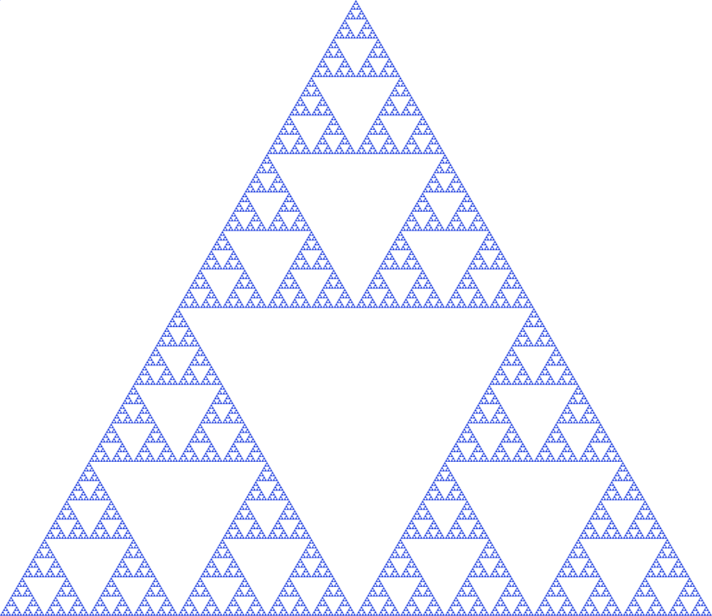
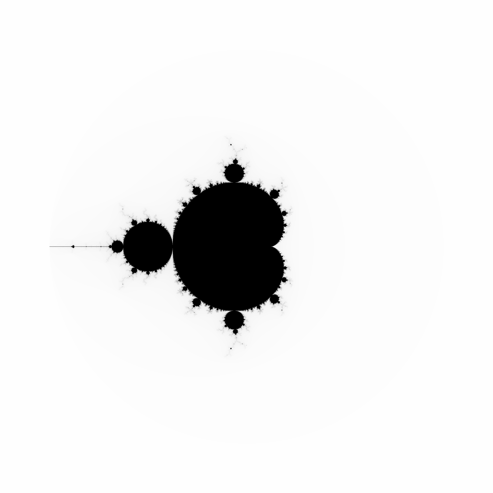
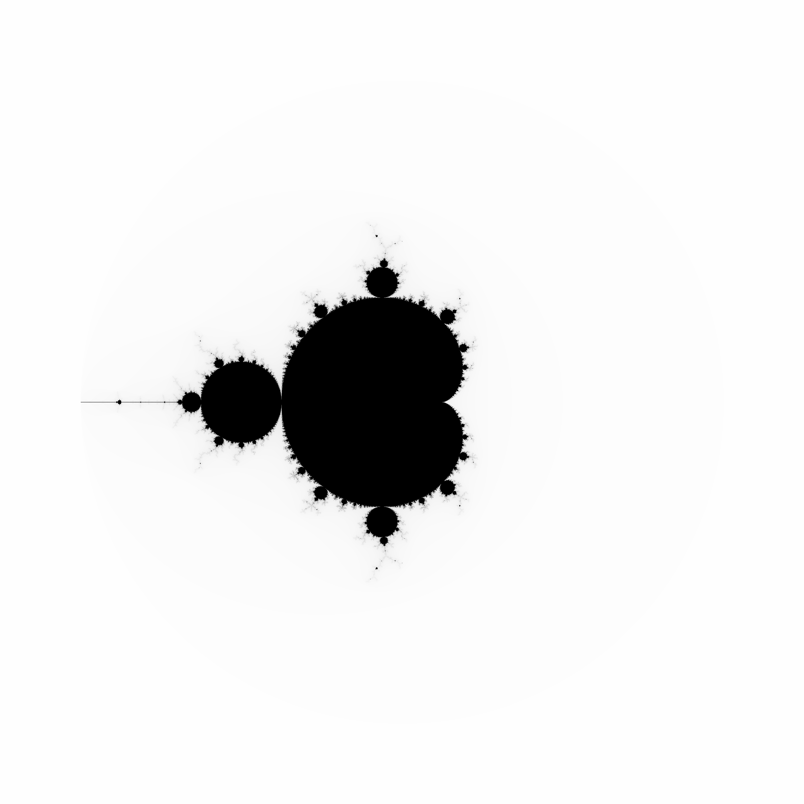
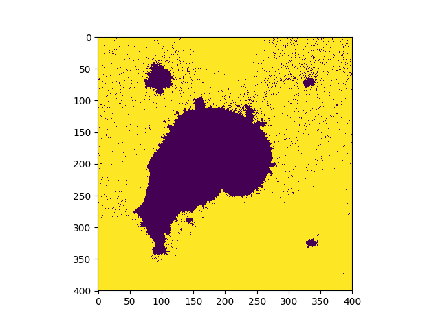
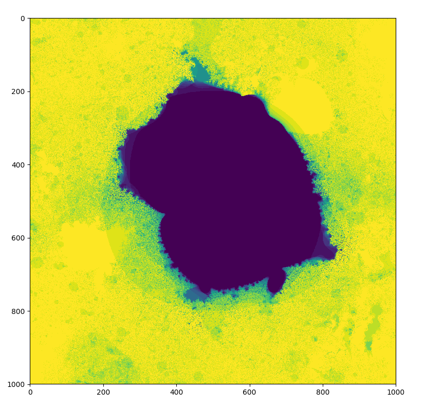

Fractals like the Mandelbrot Set are traditionally defined by a pretty simple recursive function. What if instead of a simple user-defined function we initiated a random neural network, and used that as the function?
Link to repo
Link to repo
What is a fractal?
A fractal is a sort of abstract geometrical object that contains segments which are usually copies of the original. This property is known as self-similarity. One well known fractal which exhibits this behavior perfectly is the Sierpinski triangle:


The Mandelbrot Set
For those unfamilar to the Mandelbrot set, this is what it looks like

The generation process of the Mandelbrot set is pretty simple. We start with a recursive function \(z_{t + 1} = z_{t}^2 + c\). As our base case, \(z_{0} = 0\). To plot the Mandelbrot set, each point on the complex coordinate plane is considered separately, and is the value of \(c\).
For a refresher on the complex plane, \(i\) is the imaginary number, and satisfies the property that \(i^2 = -1\). Points on the complex plane are called complex numbers. To convert a real-valued coordinate to a complex number, you take the x-coordinate (the real part) and add it to the y-coordinate (the imaginary part) multiplied by \(i\). For example, the point (3, 2) in the real plane is \(3 + 2i\). Complex numbers also have a magnitude, which is just their distance from the origin. It's very simple to compute--just convert the complex number back into a real point--and compute it's distance from the origin with \(\sqrt{x^2 + y^2}\).
To generate the Mandelbrot set, we look at all points on the complex plane. For each of these points, we evaluate the recursive function, plugging in the point as \(c\). We evaluate the recursive function for some number of iterations \(t\), and at time \(t\) we see if \(z_{t}\) has a magnitude above some threshold. If it is above the threshold, we paint the point white, otherwise we paint it black. In other words, if the value of \(z_{t}\) grows unbounded for a given \(c\), the point on the complex plane \(c\) is colored white, otherwise it is colored black.
For the sake of realistic generation, we won't actually look at all points on the complex plane. Our view will be bounded, with both our imaginary and real axes typically within the range \([-1, 1]\) (there isn't much to see beyond that region).

The generation process of the Mandelbrot set is pretty simple. We start with a recursive function \(z_{t + 1} = z_{t}^2 + c\). As our base case, \(z_{0} = 0\). To plot the Mandelbrot set, each point on the complex coordinate plane is considered separately, and is the value of \(c\).
For a refresher on the complex plane, \(i\) is the imaginary number, and satisfies the property that \(i^2 = -1\). Points on the complex plane are called complex numbers. To convert a real-valued coordinate to a complex number, you take the x-coordinate (the real part) and add it to the y-coordinate (the imaginary part) multiplied by \(i\). For example, the point (3, 2) in the real plane is \(3 + 2i\). Complex numbers also have a magnitude, which is just their distance from the origin. It's very simple to compute--just convert the complex number back into a real point--and compute it's distance from the origin with \(\sqrt{x^2 + y^2}\).
To generate the Mandelbrot set, we look at all points on the complex plane. For each of these points, we evaluate the recursive function, plugging in the point as \(c\). We evaluate the recursive function for some number of iterations \(t\), and at time \(t\) we see if \(z_{t}\) has a magnitude above some threshold. If it is above the threshold, we paint the point white, otherwise we paint it black. In other words, if the value of \(z_{t}\) grows unbounded for a given \(c\), the point on the complex plane \(c\) is colored white, otherwise it is colored black.
For the sake of realistic generation, we won't actually look at all points on the complex plane. Our view will be bounded, with both our imaginary and real axes typically within the range \([-1, 1]\) (there isn't much to see beyond that region).
Fractal generation
Different equations yield different kinds of fractals, and there are all kinds of different things you can try. The point of this project is to use a randomly generated "neural network" as a function (as a disclaimer, it's not really a neural network, because it doesn't try to solve a particular task. However, it does share many of the same aspects, like matrix multiplication and non-linearities) rather than a hand crafted one. Basically, what we're doing is turning our function.
\(z_{t + 1} = z_{t}^2 + c\)
into
\(z_{t + 1} = f_{nn}(z_{t}, c)\)
where \(f_{nn}\) is a neural network. The neural network I use in the code has one hidden layer with 10 hidden nodes. The network has two inputs, one for \(z_t\) and one for \(c\). The output of the network is \(z_{t + 1}\). The weights of the network are also complex numbers, with both the real and imaginary components of the weights initialized with a gaussian distribution. The threshold I used was \(0.8\), and I evaluated the neural network for 30 iterations. On my first attempt, I got this photo:

Way cooler than I expected. I then changed the program slightly so that instead of coloring a pixel black or white based on whether or not its value is greater than the threshold, it's colored based on how many iterations it took to exceed the threshold. This gets us an image that less grainy and shows how quickly a point grows unbounded:

The fractal looks different because network weights were initialized at random. I later started recording the seeds (unfortunately I was pretty disorganized while making this, and I don't really know if the seeds correspond to their original images :/ )
Gallery
Feel free to do whatever you want with these. You can view full resolution images at the github repo